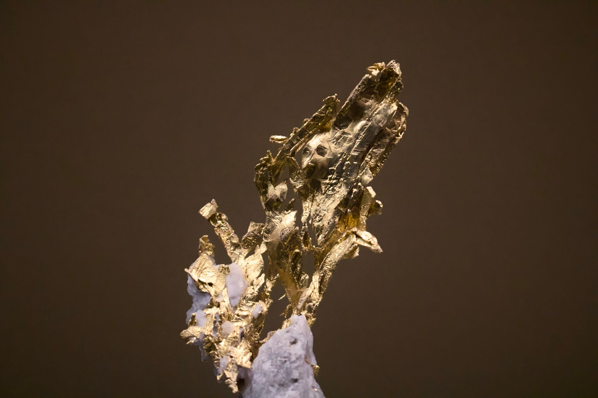

프라세오디뮴·네오디뮴 가격 반등, 중중희토류는 부진 지속

글로벌 희토류 시장이 품목별로 극명히 갈리는 흐름을 보이고 있다. 상하이금속시장(SMM) 최신 시황에 따르면, 영구자석용 원료인 프라세오디뮴·네오디뮴(Pr-Nd) 산화물 가격은 최근 수 주간 상승세를 유지하고 있는 반면, 테르븀·디스프로슘 등 중중(中重)희토류는 수요 약세로 반등 동력을 찾지 못하고 있다.
Pr-Nd 산화물 가격은 9월 중순 대비 약 4~6% 상승하며 톤당 50만 위안대 초반을 회복했다. 이는 중국 국내 전기차 생산 증가와 풍력 발전 설비 확대에 따른 고성능 네오디뮴-철-붕소(NdFeB) 영구자석 수요 증가가 주된 원인으로 분석된다.
반면 테르븀 산화물과 디스프로슘 산화물 가격은 각각 톤당 6,800만 위안대, 1,950만 위안대에서 제자리걸음을 하고 있다. 중중희토류는 주로 고온 환경용 모터 및 방산 분야에 쓰이는데, 해당 분야의 단기 수요 회복이 더딘 상황이다.
이 같은 가격 양극화는 중국의 희토류 수출 통제 정책과도 맞물려 있다. 중국 상무부는 지난해부터 갈륨·게르마늄에 이어 이트륨 등 중중희토류 수출에 추가 허가 요건을 부과해왔다. 역설적으로 이는 단기 수요 위축으로 이어져 중중희토류 가격을 오히려 눌러온 측면이 있다.
경희토류인 Pr-Nd의 경우 중국 외 공급 다변화가 상대적으로 더디다. 호주 MP머티리얼즈, 미국 에너지퓨얼스 등이 분리·정제 역량을 확대하고 있으나 중국 생산 비중은 여전히 전 세계의 85% 이상을 차지한다. 이에 따라 중국 내 수급 변화가 Pr-Nd 가격에 즉각 반영되는 구조가 유지되고 있다.
한국 영구자석 업계는 Pr-Nd 가격 상승에 예민하게 반응하고 있다. 성림첨단산업, 희성금속 등 국내 NdFeB 자석 제조사들은 원재료 가격 상승분을 제품 가격에 반영하는 데 구조적 한계가 있어 마진 압박이 커지고 있다. 특히 전기차용 구동 모터 자석은 완성차 업체와의 장기 계약 구조로 인해 단가 인상이 지연되는 경우가 많다.
풍력 발전 확대는 Pr-Nd 수요의 중기 동력으로 주목된다. 국제에너지기구(IEA)에 따르면 해상 풍력 터빈 1기당 평균 600kg 이상의 희토류 영구자석이 사용된다. 2030년까지 글로벌 해상 풍력 설치 목표를 감안하면 Pr-Nd 누적 수요는 현재 연간 생산량의 1.5배에 달하는 수준으로 증가할 수 있다는 추산도 나온다.
업계 전문가는 '단기적으로 Pr-Nd 가격 상승세는 4분기에도 이어질 가능성이 높다'면서 '다만 중국 정부의 채굴 쿼터 조정이나 수출 허가 완화 여부에 따라 급반전도 가능하다'고 말했다. 중국 국가희토그룹(CNNC)의 생산 동향이 핵심 변수로 꼽힌다.
국내 희토류 공급망 다변화 정책도 새 국면을 맞고 있다. 한국광해광업공단(KOMIR)은 올해 카자흐스탄, 캐나다 등 복수의 Pr-Nd 원료 공급처 확보 협의를 진행 중이며, 정부도 희토류특별법 제정을 통해 전략비축 및 해외 자원 개발 지원을 제도화하는 방안을 검토하고 있다.
중중희토류 시장은 방산·우주 수요 회복이 가시화되는 2027년 이후에야 본격 반등이 예상된다는 전망이 우세하다. 다만 미국의 중국산 희토류 의존 탈피 전략이 가속화될 경우 서방 수요처의 물량 선점 움직임이 중중희토류 가격을 단기 자극할 수 있다는 분석도 제기된다.
투자 측면에서 Pr-Nd 관련 ETF와 영구자석 소재주는 단기 모멘텀이 형성되고 있으나, 중국 정책 리스크와 글로벌 전기차 수요 변동성을 감안한 분산 접근이 권고된다. 국내 증시에서는 성림첨단산업, 에코프로그룹 계열 희토류 관련사들이 수혜 종목으로 언급되고 있다.